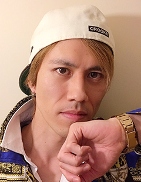
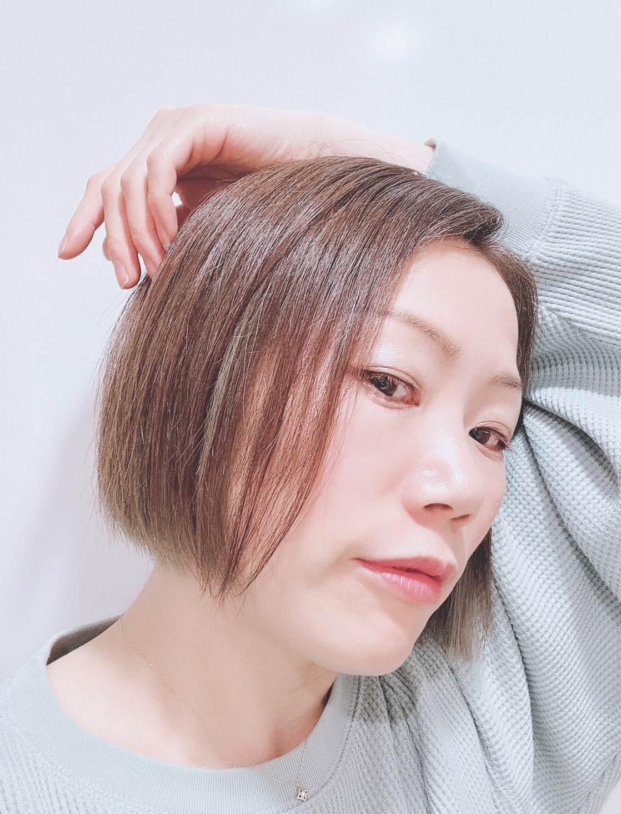
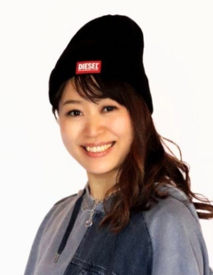
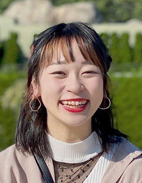
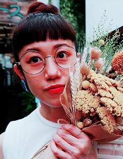
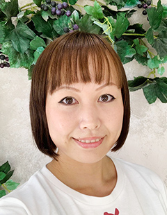

ジャズダンス歴20年以上。バレエ、ヒップホップなど様々なジャンルを学ぶ。
2001年東京ディズニーランドカウントダウンパレードダンサー。
現在は、舞台やダンスイベントなどで多数活躍。
ダンサー・振付師として活動しながら、都内の小学校やスポーツクラブなどでキッズや中学生を中心にダンス指導をしている。

数々のミュージカルやテレビ出演をこなし、 ドラマCMなどにも多数出演。
＜コンサート＞ポルノグラフィティ、GLAY、はるな愛、DNT他
＜TV＞MUSIC FAIR、ものまね紅白歌合戦、 とんねるずのみなさんのおかげでした！他
他にも多数出演。現在も活躍中！
担当クラス：土曜HIPHOP
5歳から平櫛バレエスクールでモダンバレエを始める。
専門学校で、様々なジャンルを習得した後、ジャズダンスを毛利あゆみ氏に師事。
CHEMISTRY、Heartsdales PV出演
氷川きよし Xmasコンサートダンサー
ヴィジュアル系バンド「カメレオ」 バックダンサー
TV、舞台に出演する他、振付、チーム『ちびっこ★Queen』『ist***(イスタリスク)』で、
ダンスイベントなどで多数活躍。
講師としては、キッズを中心にダンス指導をしている。
担当クラス：金曜KIDS DANCE／金曜JAZZ HIPHOP

2 児の母でもあるので子育ての経験を活かし 長年にわたりキッズダンサーの育成に携わっている。 「レッスンでは、体を動かすことの楽しさを感じてもらい、 やる気を引き出す言葉かけを心がけています。 お子様の自己肯定感を育みながら 協調性や粘り強さ、積極性、考える力など、 ダンスを通して心と体の発育をサポートしていきます。」
■キッズ振付指導
2015 全日本小中学生ダンスコンクール東日本大会・金賞
2015 全日本小中学生ダンスコンクール全国大会・金賞
2019 たいとう音頭ダンスコンテスト・優勝
多数のキッズダンスコンテストにおいても振付指導にあたり受賞経歴あり。 多くのアーティストのバックダンサーなどの振付指導にあたり、 インストラクター歴はスポーツクラブからダンススタジオ、 幼稚園のダンス講師まで幅広い経験をもつ。
担当クラス：土曜はじめてダンス
□ダンス歴
ジャズヒップホップ 15年
ジャズ 4年（ヒップホップ、チア、タップ、ロック、ハウス 2年）
4歳頃から習い事でジャズヒップホップを習い、高校の部活で全国大会JAZZ部門1位を獲る。
ダンスの専門学校に通い、多彩なジャンルを学ぶ。
現在、キッズを中心にヒップホップ、ジャズのレッスンをしている。
担当クラス：月曜KIDS DANCE

□ダンス歴
jazz 10年
contenporary 6年
KPOP 2年
jazzhip hop 10年
大人になってからダンスを初めjazz、jazz hiphop 、contenporaryを中心に様々なジャンルのダンスを学ぶ。
アーティストさんのバックアップやダンスレッスン、イベントへのダンサー出演、楽曲振り付けやCMへの出演を行う。
2017年からはくるくるミラクルヨガ指導者資格を取得し、ダンスインストラクターだけではなくパーソナルヨガトレーナーとしても活動中。
担当クラス：火曜KIDS DANCE／火曜JAZZ
4才より、森利子バレエ団 バレエ研究所にてバレエを始める。
3歳より法村友井バレエ学校庄内支部にてクラッシックバレエを学ぶ。
法村友井バレエ団森川起美子に師事。
2008年よりカルチャースクールでバレエクラスのアシスタントを始め、その後、甘糟バレエスタジオにて大人バレエ初級、児童クラス担当。その他ベビー、中,高生クラス、ポアントクラスなど指導を経て現在に至る。
担当クラス：水曜バレエ

３歳よりバレエを始め日本音楽高等学校バレエコース、 日本女子体育大学舞踏学専攻。
中学校高校保健体育教員免許取得。
２PM、板野友美、華原朋美コンサートやa-nation出演多数。
現在は都内各スタジオにてキッズのバレエの指導を中心に活動。
担当クラス：日曜バレエ
私は25年以上ダンスを学んできました。
ヨガを学びはじめたのは7年以上前。そこから大きく人生が変わり、心と身体の大切さを学びました。
ダンスやヨガの素晴らしさを深く知り、更に沢山の人、特に地域の方々に広めたいと思いこのスタジオを立ち上げました。
大人はいつまでも若々しく健康に、子供たちには協調性のある元気な子に育ってもらえたらと願っています。
この様な暖かい場所で平和な時間を一緒に過ごせる喜び、それを地域の皆さんと共有していくことが私の願いです。
AIKA's Blog：ブログはこちらから♪
クラスの様子なども、掲載しています。
雰囲気を感じていただけると思いますので、ぜひご覧ください♪